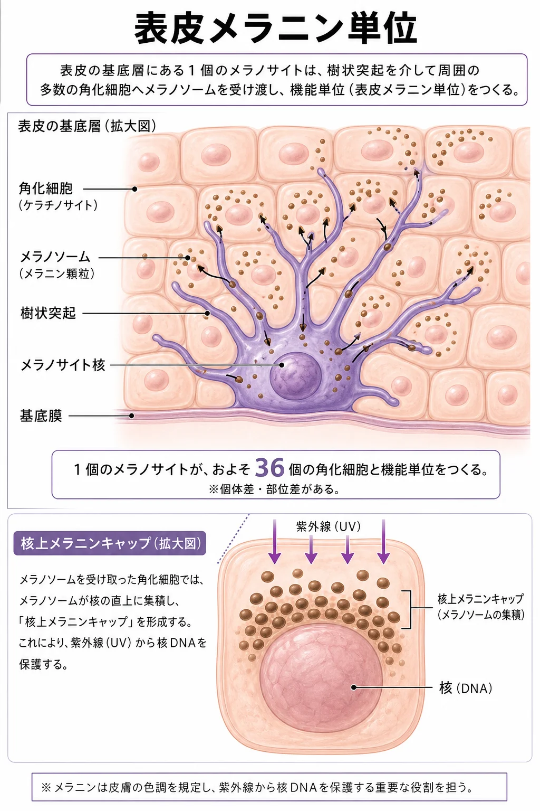
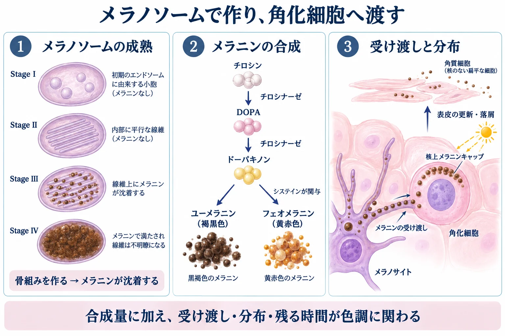
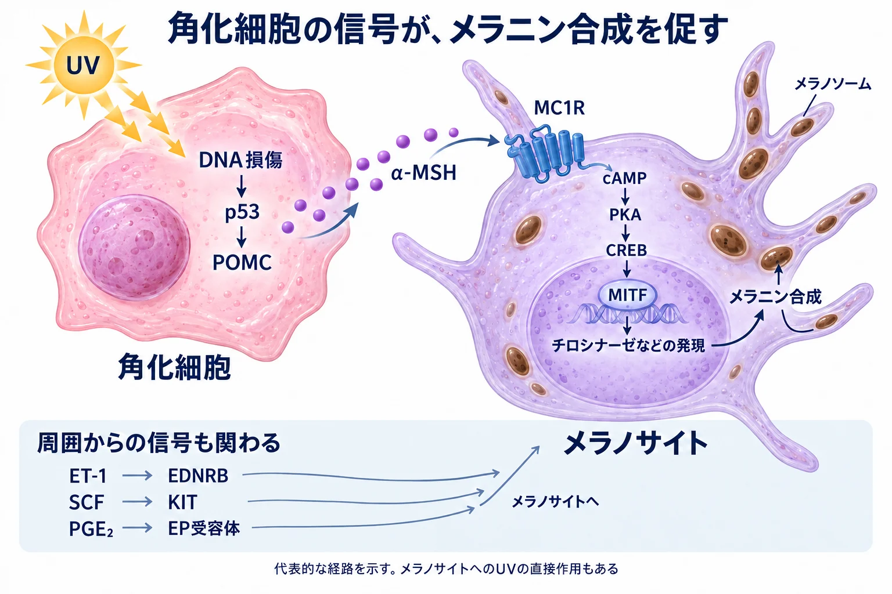

美容皮膚科 ／ 組織の生化学
メラノサイトと色素形成核を守る色素を、作って配る
公開 2026-09-14
表皮では、メラノサイトがメラニンを作り、周囲の角化細胞へ渡しています。 メラニンは肌の色に関わるとともに、紫外線による核DNAの損傷を減らします。色素形成を理解するには、作る量だけでなく、受け渡した色素がどこに分布し、どのくらい残るかも見る必要があります。
この章の一言
表皮の色素は、メラノサイトと角化細胞の共同作業で保たれています。 合成・受け渡し・分布・消失を順にたどると、肌の色が変わる仕組みが見えてきます。
1 メラノサイトは、基底層から周囲の細胞へ色素を配る
メラノサイト（melanocyte） は、表皮の基底層にある色素産生細胞です。細胞体から伸びる 樹状突起 を介して、周囲の 角化細胞（keratinocyte） へメラニンを渡します。
1個のメラノサイトと、およそ36個の角化細胞が作る機能単位を 表皮メラニン単位（epidermal melanin unit） と呼びます。この数は目安で、部位などによって変わります。
角化細胞に渡された色素は、核の表面側に集まって 核上メラニンキャップ（supranuclear cap） を作ります。ヒト皮膚を用いた実験では、このキャップのある細胞でUVBによるDNA損傷が少ないことが確認されています。Kobayashiら, 1998

詳しく：細胞の由来と肌色の違い
メラノサイトは 神経堤（neural crest） に由来し、発生の過程で皮膚へ移動します。表皮を作る角化細胞とは由来が異なります。
同じ部位で比べた肌色の違いは、メラノサイトの数だけでは説明できません。メラニンの種類・量に加え、色素を含む粒子の大きさや、角化細胞内での分布・残り方が関わります。ヒト皮膚でも、肌色による角化細胞内の色素分布の違いが調べられています。Thongら, 2003
メラニンはメラノサイトの中でも色を持っています。角化細胞への受け渡しは、すでにある色素を表皮に広く分布させる過程です。
2 メラノソームの中で、メラニンを合成する
メラノサイトには、色素を作る メラノソーム（melanosome） というオルガネラがあります。リソソーム関連オルガネラの一種で、内部の構造を整えながらメラニンを蓄積します（→ オルガネラ）。
合成の中心となる酵素が tyrosinase（チロシナーゼ） です。アミノ酸の tyrosine（チロシン） から DOPA、さらに dopaquinone（ドーパキノン） を作る最初の反応を担います。その後の反応から、褐黒色の eumelanin（ユーメラニン） と黄赤色の pheomelanin（フェオメラニン） が生じます。

詳しく：メラノソームの成熟と合成に関わる分子
ユーメラニンを含むメラノソームの成熟は、形態から stage I〜IV に分けられます。
| 段階 | 内部で起こること |
|---|---|
| I | 初期小胞の内部に、線維を作る準備が始まる |
| II | 線維状の骨組みが整う。まだ明瞭なメラニン沈着はない |
| III | 骨組みにメラニンが沈着する |
| IV | メラニンが密に蓄積し、内部の骨組みが見えにくくなる |
骨組みには PMEL（Pmel17） というタンパク質が関わります。酵素や構造タンパク質は小胞体・ゴルジ体などを経て運ばれ、メラノソームの成熟と合成を支えます。Bersonら, 2001
合成にはtyrosinaseに加えて TYRP1・DCT（TYRP2） も関わります。DCTはユーメラニン合成過程の反応を担います。ドーパキノンが cysteine（システイン） と反応するとフェオメラニン側へ進むため、酵素だけでなく基質の環境も色素の種類を左右します。MC1Rシグナルも、この合成の方向と量の調節に関わります。
ユーメラニンとフェオメラニンでは光に対する性質も異なり、同じ量なら同じ防御能がある、とは扱えません。
メラノソーム内部のpHも、合成酵素の働きを左右します。 内部の酸性が弱まるとtyrosinaseが働きやすくなります。これはオルガネラ内部の環境の話で、表皮とターンオーバーで扱った皮膚表面・角層のpHとは分けて考えます。Bellonoら, 2014
詳しく：色素形成とイオン輸送体
OCA2 はメラノソーム膜の塩化物イオンの通過に関わり、内部pHとメラニン合成に影響します。SLC45A2・SLC24A5 なども色素形成に関わる輸送体です。これらをすべて同じpH調節機構として扱うのではなく、それぞれがイオン環境や成熟をどう変えるかを見ます。OCA2については、オルガネラのイオン電流とpHを測定した研究があります。Bellonoら, 2014
3 周囲からの信号が、作る量を変える
メラノサイトは、周囲の角化細胞などが出す信号に応じてメラニン合成を変えます。代表的なのが、紫外線を受けた角化細胞からの信号です。
角化細胞でDNA損傷への応答が起こると、α-MSH というペプチドの産生につながります。α-MSHがメラノサイトの受容体 MC1R に結合すると、細胞内の信号を介して、色素形成関連遺伝子を調節する転写因子 MITF の働きが高まります。Cuiら, 2007

メラノサイト自身も紫外線を受け、直接応答します。日焼けを理解するには、角化細胞を介した反応と、メラノサイトへの直接作用の両方が必要です。Wicksら, 2011
詳しく：α-MSHからMITFへ、その他の入力との違い
角化細胞では、DNA損傷に応答する p53 が POMC の発現を促します。POMCはα-MSHの前駆体です。受け取るメラノサイトでは、MC1R → cAMP → PKA → CREB → MITF という経路が働きます。MITFはtyrosinaseなど、合成やメラノソームに関わる遺伝子の発現を調節します（→ 受容体と細胞内シグナル）。Cuiら, 2007
メラノサイトへの入力はα-MSHだけではありません。
| 信号 | 受容体・主な関わり |
|---|---|
| endothelin-1（ET-1） | EDNRBを介し、色素形成などを調節する |
| SCF（stem cell factor） | KITを介し、生存・増殖・色素形成を支える。線維芽細胞などからも供給される |
| PGE₂ | EP受容体を介し、樹状突起や色素合成に影響する。受容体の種類によって細胞内の反応が異なる |
KITは受容体型チロシンキナーゼで、MC1Rと同じGPCRではありません。これらの信号を、すべて一本のcAMP経路として結ばないことが重要です。PGE₂についても、異なるEP受容体がcAMPに反対方向の影響を及ぼすことが示されています。Starnerら, 2010
Wnt/β-cateninや酸化還元状態も、メラノサイトの機能に関わります。多数の入力があるため、MITFだけを単純なオン・オフのスイッチとして扱うことはできません（→ 酸化ストレスと抗酸化）。
炎症が続くと、周囲の細胞からの信号も変わります。炎症後の色素沈着を考えるときは、メラニン合成だけでなく、色素形成を刺激する組織環境が続いていないかも見ます。
詳しく：炎症・plasmin系と色素形成
plasmin はフィブリンを分解する酵素です。角化細胞が作る plasminogen activator によるplasminogenの活性化も、色素形成を調節する細胞間の反応との関連が研究されています。
角化細胞の培養上清を使った実験では、tranexamic acid（トラネキサム酸） がその色素形成促進作用を抑え、plasminogen activatorの関与が検討されました。これは角化細胞を介した作用の根拠の一つです。ただし、肝斑や炎症後色素沈着を、すべて「plasmin → PGE₂ → MITF」の一本で説明できるわけではありません。Maeda・Tomita, 2007
PGE₂・bFGF・VEGFなどは、色素細胞や血管を含む組織環境に関わる因子ですが、すべてをplasminの下流に一列に並べるのは単純化しすぎです。病態と治療への接続は しみとくすみ、薬剤の作用は 美白外用の生化学 で扱います。
4 色素を渡し、角化細胞の中に配置する
色素を含むメラノソームは樹状突起側へ運ばれ、メラニンが角化細胞へ受け渡されます。細胞内で運ぶ過程と、細胞間で渡す過程は別です。
受け取った色素は角化細胞内に分布し、核上メラニンキャップにもなります。色素の量だけでなく、大きさ・まとまり方・分布が肌の色と光防御に関わります。Thongら, 2003、Kobayashiら, 1998
詳しく：輸送と受け渡しを担う分子
メラノサイト内では、微小管を使う輸送と、細胞の周辺部のアクチンに沿った輸送・保持が関わります。Rab27a・melanophilin・myosin Va は、メラノソームとアクチン系のモーターをつなぐ複合体です。三つの分子が微小管上の輸送まで一括して担うわけではありません。Wuら, 2002
細胞間の受け渡しには複数のモデルがあります。例えば、メラノサイトがメラニンの芯を放出し、角化細胞が取り込む仕組みが実験で示されています。Rab11b はこの放出に関わり、受け手側では PAR-2 などが取り込みの調節に関わります。メラノソームが常に膜を保ったまま丸ごと渡る、と決めつけずに読みます。Tarafderら, 2014
5 受け渡された色素は、表皮の更新とともに減っていく
角化細胞が上の層へ移動する間に、色素を含む細胞内構造の処理が進みます。表面に残った色素は、角層細胞の落屑とともに失われます。作る量が減っても、すでに表皮にある色素がすぐになくなるわけではありません。 表皮の更新は 表皮とターンオーバー で扱った流れです。
また、色素が真皮へ落ち込み、マクロファージに取り込まれている場合は、表皮のターンオーバーだけでは除去されません。色素がどの層にあるかは、しみの経過を考えるうえでも重要です（→ しみとくすみ）。
6 美容医療は、どの過程に働きかけるのか
色素への作用は、合成・受け渡し・分布や消失のどこに働くかで整理できます。例えば、tyrosinaseへの作用は合成、niacinamideの培養研究で示された作用は受け渡しの抑制です。Hakozakiら, 2002
レチノイドは角化細胞の増殖・分化を変えるため、「色素を速く排出する薬」だけでは説明できません。色素を作る細胞、受け取る細胞、周囲の炎症を分けて捉えることが、薬剤や施術の理解につながります（→ レチノイド外用の生化学・美白外用の生化学・Qスイッチ・ピコ秒レーザー）。
この章の到達点
- メラノサイトは基底層にあり、樹状突起を介して角化細胞へ色素を配る。
- メラニンはメラノソーム内で合成される。 tyrosinase・内部の成熟・基質やpHが合成に関わる。
- 角化細胞などからの信号が、メラノサイトの合成を調節する。 α-MSH–MC1R–MITFは代表的な経路で、入力はこれだけではない。
- 色素の受け渡しと分布は、色調と核DNAの保護に関わる。 合成量だけで見た目は決まらない。
- すでにある色素が減るには時間がかかる。 表皮内の色素と、真皮に残る色素を区別する。
根拠の読み方
核上メラニンキャップの光防御、メラノソームの成熟、p53–POMCを介した細胞間の信号には実験的な裏づけがあります。一方、細胞間の受け渡し方や、各病態でどの炎症経路がどれだけ寄与するかは、複数のモデルと研究条件を区別して読みます。分子への作用が確認されても、製品や施術の効果量はそれぞれの臨床研究で判断します。
参考文献
- Kobayashi N, et al. Supranuclear melanin caps reduce ultraviolet induced DNA photoproducts in human epidermis. J Invest Dermatol. 1998. PMID: 9579550
- Thong HY, et al. The patterns of melanosome distribution in keratinocytes of human skin as one determining factor of skin colour. Br J Dermatol. 2003. PMID: 14510981
- Berson JF, et al. Pmel17 initiates premelanosome morphogenesis within multivesicular bodies. Mol Biol Cell. 2001. PMID: 11694580
- Bellono NW, et al. An intracellular anion channel critical for pigmentation. eLife. 2014. PMID: 25513726
- Cui R, et al. Central role of p53 in the suntan response and pathologic hyperpigmentation. Cell. 2007. PMID: 17350573
- Wicks NL, et al. UVA phototransduction drives early melanin synthesis in human melanocytes. Curr Biol. 2011. PMID: 22055294
- Starner RJ, et al. PGE(2) is a UVR-inducible autocrine factor for human melanocytes that stimulates tyrosinase activation. Exp Dermatol. 2010. PMID: 20500768
- Maeda K, Tomita Y. Mechanism of the Inhibitory Effect of Tranexamic Acid on Melanogenesis in Cultured Human Melanocytes in the Presence of Keratinocyte-conditioned Medium. J Health Sci. 2007. doi:10.1248/jhs.53.389
- Wu XS, et al. Identification of an organelle receptor for myosin-Va. Nat Cell Biol. 2002. PMID: 11887186
- Tarafder AK, et al. Rab11b mediates melanin transfer between donor melanocytes and acceptor keratinocytes via coupled exo/endocytosis. J Invest Dermatol. 2014. PMID: 24141907
- Hakozaki T, et al. The effect of niacinamide on reducing cutaneous pigmentation and suppression of melanosome transfer. Br J Dermatol. 2002. PMID: 12100180
概説：D'Mello SAN, et al. Signaling Pathways in Melanogenesis. Int J Mol Sci. 2016;17:1144. doi:10.3390/ijms17071144／Cichorek M, et al. Skin melanocytes: biology and development. Postepy Dermatol Alergol. 2013;30:30–41. doi:10.5114/pdia.2013.33376／Videira IFDS, et al. Mechanisms regulating melanogenesis. An Bras Dermatol. 2013;88:76–83. doi:10.1590/S0365-05962013000100009